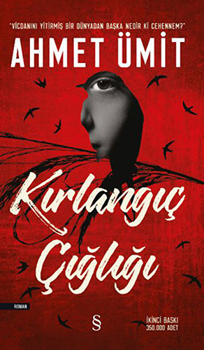

|  |
Acıyı gördüm. Gözlerinin ortasında bir çiçek gibi büyüyen irisin önce ağır ağır büzülmesini, ardından çığlık gibi ansızın patlamasını gördüm. Titreyen dudaklar, bal mumuna dönüşen yüzleri, çöken yanakları, irileşen elmacık kemiklerini, birer mağara gibi derinleşen göz çukurlarını, kurumuş ağızların içinde pelteleşen dilleri gördüm.
Anladım ki benliğimizin farkına vardığımız an, acının pençesinde kıvrandığımız andır.
Çığlık değil, ürperiş değil, evet, nereden geldiğini bilmediğim o vahşi iniltiyi kalbimin derinliklerinde duydum. Soluksuz kaldım, boğazım kupkuru, alnım ateşler içinde, tuhaf bir hülyaya kapılmışım gibi sürüklendim o dipsiz boşlukta. Hayatın en karanlık sırrıyla yüzleştim.
Karanlığın her aşamasından geçtim, akan kanın sesini duydum, ölümün serinliğini damarlarımda hissettim.
Geçmişin kamburunu çoktan söküp attım sırtımdan.
İnsanın insanı öldürdüğü o ilk ânı gördüm, katilin zafer haykırışını, kurbanın korku çığlığını işittim.
Her an uyanmaya hazır o muhteşem dürtüyü bastırmak, insanlığın en masum haline, en saf doğasına dönmemek için yıllarca ihanet ettim kendime. Kendimle birlikte bütün dünyayı da kandırdım. Neredeyse başaracaktım ama bırakmadılar, benim adıma onlar öldürmeye başladılar.
İşte bu yüzden geri döndüm... |